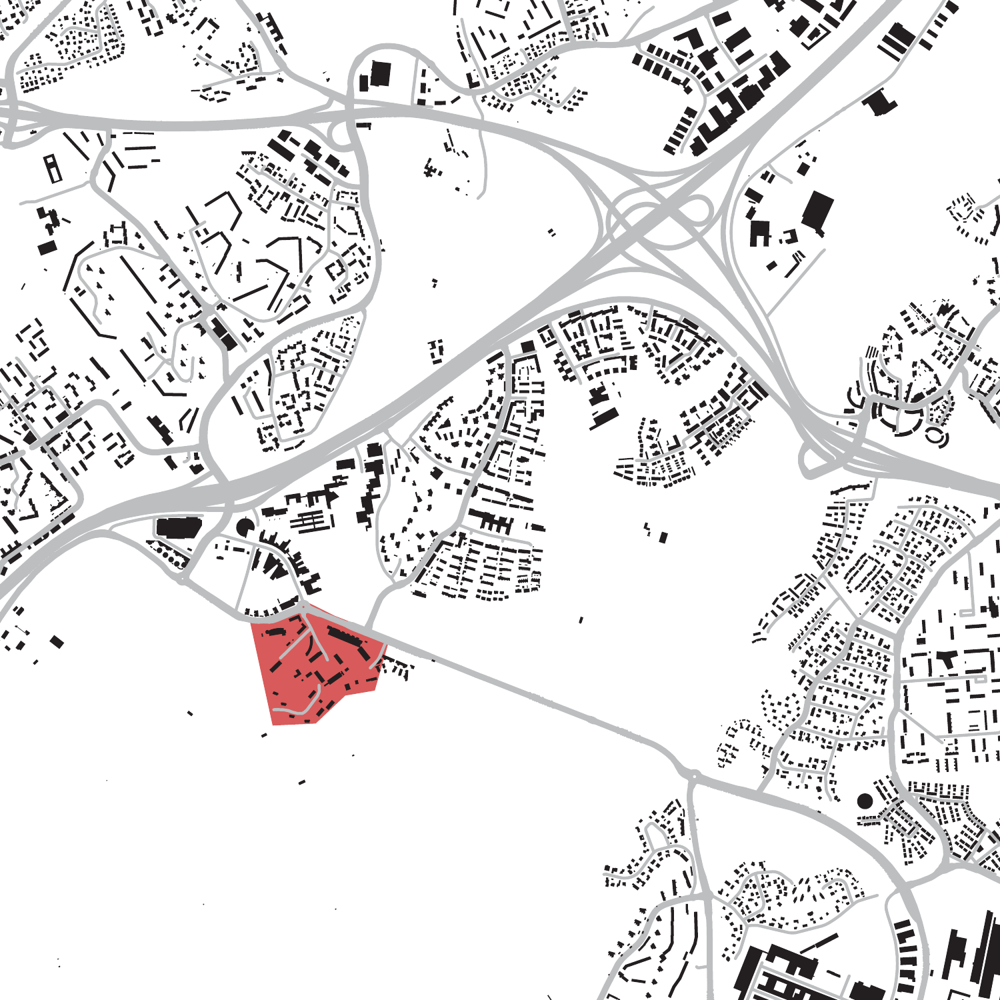
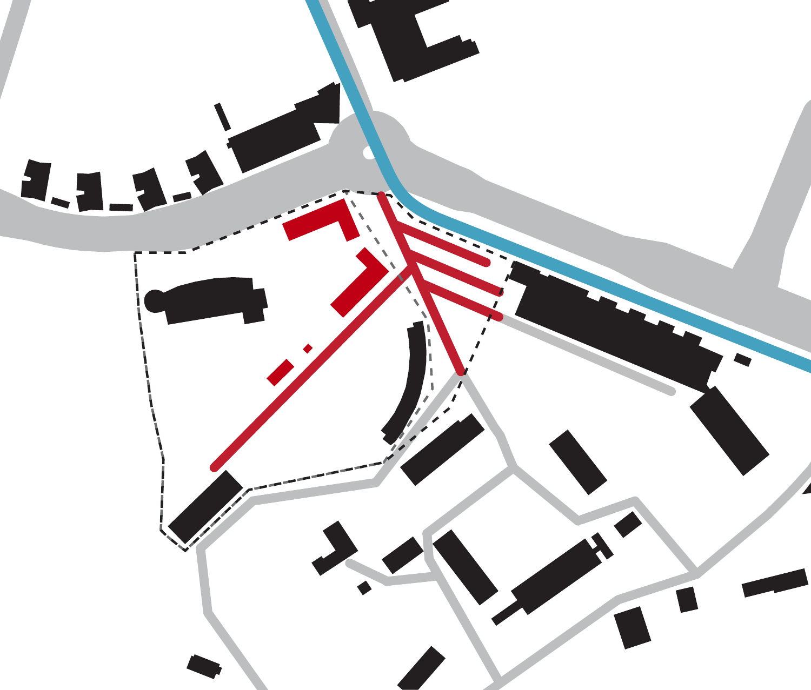
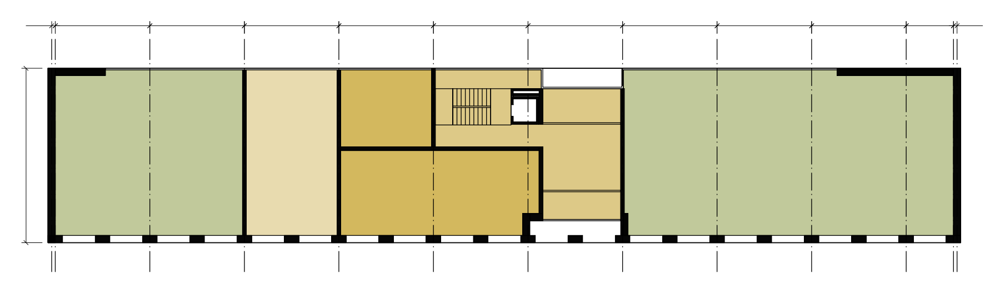
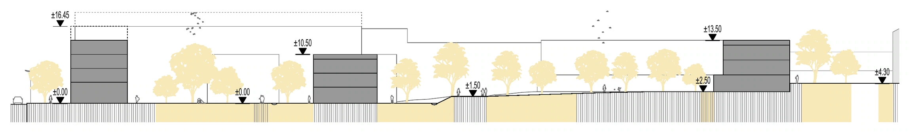
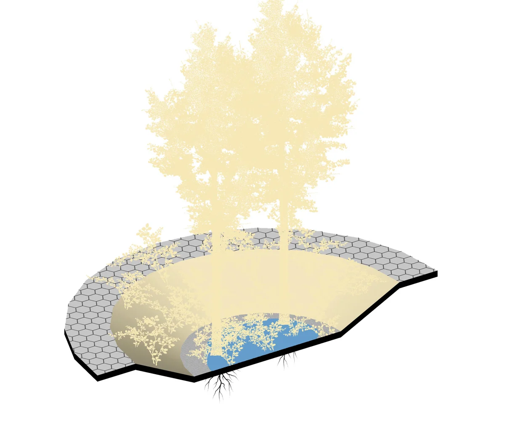

Viikki residential area
A transition between the city and nature in Viikki, Helsinki. The proposal moves from urban blocks to smaller buildings distributed through greenery, protecting the landscape and leaving room for communities to develop. The work progresses from the wider residential area to the detailed design of building B.
Part 1
Urban design and zoning
The neighbourhood plan connects a continuous street edge with smaller housing volumes set among the trees. The zoning plans test how housing, shared rooms and ground-floor uses fit into each building.
Location

Design principles

Architectural site plan
Select a lettered building to see its zoning plans.
Building B
The zoning-stage proposal for the straight housing block. Its detailed architectural design follows in Part 2.

Neighbourhood section

Water management
Select a circle to see how the channels and basins carry and collect rainwater.
Planted basin
Circular depressions collect runoff within the paved landscape. Trees and planting are part of the basin section.

Neighbourhood axonometrics
Part 2
Building B
Building B develops the zoning proposal into a detailed architectural design. A repeating timber frame organises the apartments and balconies above street level, with the stair and lift grouped in the middle of the block.
Detailed drawings
Select a section line or an elevation arrow on the plan.
Construction
Explore the primary timber frame, CLT slabs and stairs, balconies and lift shaft. The element switches and cutaway show how they fit together.
Interactive model available when JavaScript is enabled.